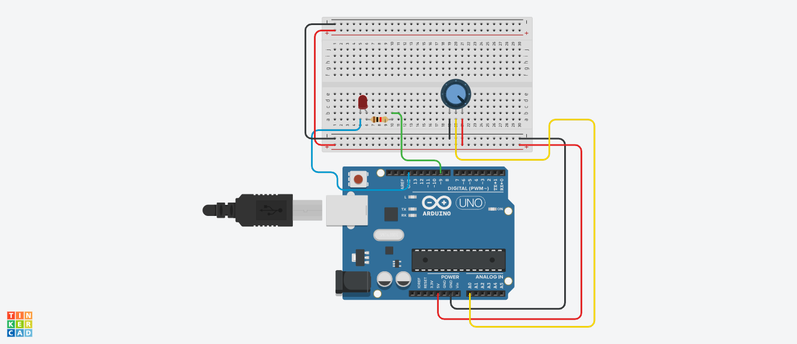

3-variant
1-topshiriq
Internet vositalari tizimi fanidan amaliy vazifa:
Quyidagi elementlardan Potensiometr ni aylantirganingizda
LED yorqinligi o‘zgaradigan dasturni tuzing.

C++ (Arduino) kod:
2-topshiriq
OYD va tarmoq dasturlash (C++, Java) fanidan fanidan amaliy vazifa:
Foydalanuvchi bir, ikki yoki uch xonali son kiritsin,
ushbu sonni so‘z bilan yozib chiqaradigan dastur tuzilsin. Misol uchun:
Son kiriting: 651.
Kiritgan Son: Olti yuz ellik bir.
C++ (1):
C++ (2):